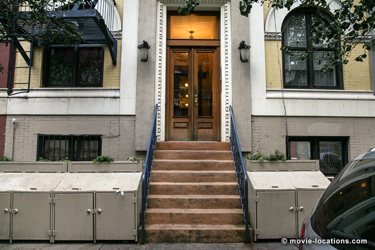
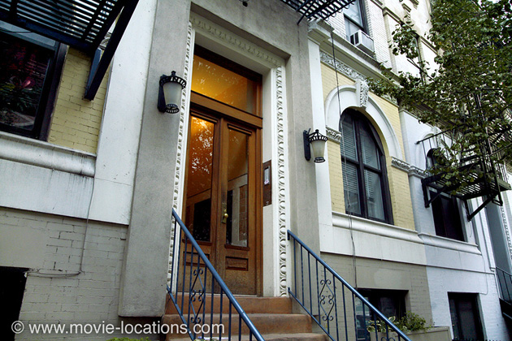
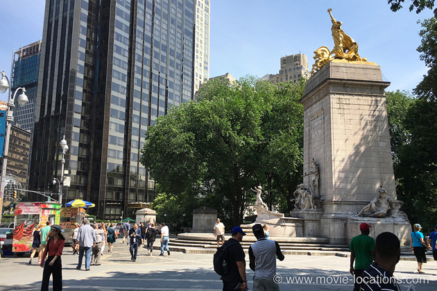
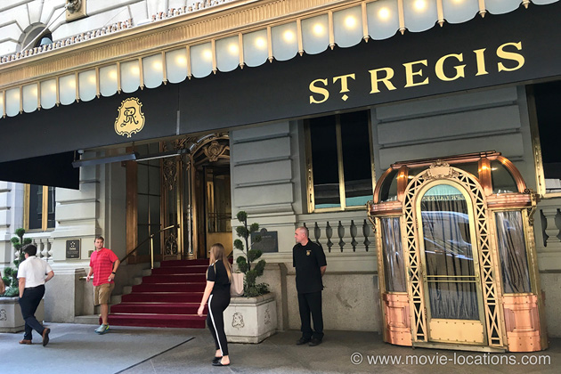

Taxi Driver
Main Content

If it were nothing else, Taxi Driver would be a priceless expressionist portrait of New York in the mid-Seventies, before the great clean-up. But, of course, it is much more.
New York has undergone a profound transformation and many of the film’s sleazy locations are either gone or unrecognisable.
▶ The cab office to which troubled insomniac Travis Bickle (Robert de Niro) applies for a night-time job, stood on the north side of 57th Street, at 11th Avenue and was still standing when I first visited. It’s finally fallen victim to redevelopment. By the mid-Nineties, the Pier 97 Terminal Building on 11th Avenue, which serviced the Swedish American Line, and the West Side Elevated Highway you can see in the background of the film, were already gone. Pier 97, which has since been used as a carpark, is now being developed as a recreation area. ⏏
Bickle’s nighttime meanderings centre around the old Times Square back when it was the notorious heart of the city’s less salubrious entertainment sector (“All the animals come out at night…”).
Of course, porn, sex work and drugs haven’t disappeared entirely but they’ve been driven away from what is now the glittering centre of Big Apple tourism. It’s difficult to make out the buildings any more beneath all that eye-popping dazzle.
▶ Bickle drops off a fare at one location which remains almost unchanged, the Hotel Olcott, 27 West 72nd Street on the Upper West Side.
The Olcott is just west of the Dakota Building and, though it’s now a residential block, Mark David Chapman, the murderer of John Lennon, briefly stayed here while it was still a hotel. ⏏
▶ Bickle whiles away his sleepless days in porno theatres. The scene of him plodding blankly along the street swigging on a bottle of Peach Brandy, which has gone on to become a classic image from the film, was shot on 8th Avenue at West 47th Street, just northeast of Times Square. He passes the Hollywood porno house. That canopy still remains but now marks the entrance to the Gray Line Visitor Center, 777 Eighth Avenue. ⏏
His destination is the ‘Show and Tell’ Live Show and XXX Movies, which stood a little further along at 735 Eighth Avenue. The movie house, along with its neighbours, been replaced by the swish new Riu Plaza New York Times Square Hotel. Show and Tell’s concession girl, who gives Bickle such a hard time was more amenable in real life. It’s Diahnne Abbott, who went on to marry de Niro.
Bickle’s awkward but intriguing advances, get a better reception from Betsy (Cybill Shepherd), in his eyes the ideal of pristine femininity, who works in the campaign HQ to get Charles ‘We are the people’ Palantine elected president.
▶ The campaign office is another lost location. It’s been replaced by the Bank of America Financial Center, on the southeast corner of Broadway and, believe it or not, Sesame Street (which is actually a stretch of West 63rd Street). You can still recognise the building’s distinctive footprint. ⏏
▶ Wary but fascinated, Betsy meets Bickle for coffee and pie at what was Charles Coffee Shop, now redeveloped as a branch of drugstore Duane Reade, 4 Columbus Circle on the corner of Eighth Avenue at 58th Street, with that view of the Christopher Columbus Column. ⏏
Nighttime shots give a glimpse of the old and notoriously rough Terminal Bar, Eighth Avenue on the northeast corner of West 41st Street, named after its position opposite the Port Authority Bus Terminal.
The Terminal closed in 1982 and the block has been redeveloped as the New York Times Building. The all-night bar in Scorsese’s dark 1985 comedy After Hours was supposed to be the Terminal, and so the Emerald Pub in SoHo (which itself has now closed) stood in for it.
▶ Up north, on Columbus Avenue at West 89th Street, Bickle’s cab is egged by a gang of youths. It’s another dodgy-looking area which has since been redeveloped. ⏏
▶ Bickle, naively, takes Betsy to see a movie at the Lyric Theater, which is showing Sometime Sweet Susan (though the movie they actually watch is the controversial Swedish film Language of Love, a Sixties sex-ed documentary which found fame when a campaign by anti-pornography groups conferred on it a tantalizing reputation as a porn classic). Surprisingly, the ornate Lyric Theatre, 214 West 43rd Street, is still in business, though now as a legit live theatre currently (2019) hosting Harry Potter and the Cursed Child. ⏏
The horrified Betsy storms out and the blossoming relationship ends abruptly. Bickle’s desperately pleading phone call to Betsy makes for one of the most emotionally painful sequences in the film, as Scorsese’s camera moves quietly away from the excruciating conversation.
▶ Oddly, that public phone is in the West 53rd Street office entrance of the Ed Sullivan Theater, 1697 Broadway, home of The Late Show with Stephen Colbert. ⏏
▶ The next sequence is disturbing in a whole different way. It begins straightforwardly enough as Bickle picks up a fare outside McAnn’s Bar, which stood at 692 Third Avenue at East 43rd Street (the premises now houses Muldoon’s Irish Pub). ⏏
When they arrive at the destination, the customer wants to just sit and talk… and talk… an endless flow of misogyny and hate. The troubled passenger was to have been played by George Memmoli (who played Philbin in Brian de Palma’s Phantom of the Paradise) but when he pulled out through illness, Scorsese took over the part himself.
▶ The apartment block where the man fixates on the woman in the window is Tudor City Place at East 41st Street, a residential complex only a couple of blocks east of McAnn’s. Tudor City also appears in Splash!, Scarface and The Bourne Ultimatum, as well as becoming the residence of Norman Osborne / The Green Goblin in Sam Raimi’s Spider-Man films. ⏏
▶ This litany of bile seems to chime with Bickle. The cabbies’ hangout, where he confides that he’s having “bad ideas” to the Wizard (Peter Boyle) was the Belmore Cafeteria, which stood on Park Avenue South at 28th Street. It was a real 24/7 café that’s long since disappeared. You can glimpse it again in the original 1974 The Taking of Pelham 1-2-3. ⏏
▶ As a terrible plan begins to take shape, Bickle is picked up in – what else – a cab, to meet Easy Andy, a ‘travelling salesman’, on the northwest corner of Fifth Avenue at 19th Street. ⏏
▶ The hotel room where Andy enthusiastically presents Bickle with a tantalising array of weaponry is across the East River from Manhattan. It’s 87 Columbia Heights, Brooklyn, overlooking the Brooklyn Queens Expressway and the Brooklyn Bridge. ⏏
▶ Still in Brooklyn is the Palantine rally where Bickle chats to the inscrutable secret service officer. This is Pineapple Walk on Cadman Plaza West, opposite Cadman Plaza Park, near Clark Street Station. ⏏
▶ Now armed and bristling with pent-up frustration, Bickle gets his opportunity to act when he discovers his local grocery store being threatened. The ‘R&M Supermarket’, where he shoots the would-be robber is 546 Columbus Avenue, on the Upper West Side just three blocks south of where his cab got egged. ⏏
▶ Beginning to fixate on Senator Palantine, he’s moved on as he sits idly in his cab watching another rally, held on Seventh Avenue at 38th Street. ⏏
A ’new chapter’ begins when Bickle finds another innocent female to fixate on. He sees the worryingly young Iris (Jodie Foster) and her friend walking past the Variety Theatre, which is long gone.
They’re clearly being used for sex work and he follows them on to East 13th Street in the East Village.
▶ Bickle ingratiates himself with Iris’s pimp, Matthew / Sport (Harvey Keitel) who hangs out in the doorway of 204 East 13th Street. ⏏

▶ A little further long, 226 East 13th Street, between Second and Third Avenues, is the decrepit hotel in which Iris is expected to provide services for paying customers but where Bickle wants only to talk to her. Of course, it’s now a smart private home. ⏏

▶ Now a man on a mission, Bickle turns up sporting a mohawk, intending to assassinate Palantine at the big rally held in Columbus Circle at the southwest corner of Central Park. ⏏
When he’s thwarted, it’s back to the East Village and that hotel for the climactic bloodbath.

▶ A quiet coda finds Bickle, several months later and now a hero, meeting once again with Betsy when he picks her up outside the St Regis Hotel, 2 East 55th Street at Fifth Avenue. ⏏
The venerable hotel, opened by John Jacob Astor in 1904, is also featured in The Godfather, Woody Allen’s Radio Days and Hannah and Her Sisters, The Devil Wears Prada and The First Wives Club.
Visit Info
Visit The Film Locations
New York
Flights: John F Kennedy International Airport, New York, NY 11430 (tel: 718.244.4444)
Visit: New York
Travel around: MTA
Stay at: the St Regis Hotel, 2 East 55th Street, New York, NY 10022 (tel: 212.753.4500)